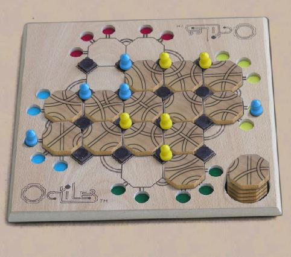

Octiles
Octiles est un jeu de course pour 2 à 4 joueurs. Le plateau est une grille inhabituelle de piliers carrés intercalés entre des tuiles octogonales. Les participants sont perchés sur les piliers et traversent les pistes tracées sur les octogones.
Chaque tour consiste en un placement (ou remplacement) de tuile et le déplacement d'un participant le long d'un chemin se trouvant sur cette tuile. Les participants ne peuvent pas se bousculer ou se capturer ; le but du jeu est donc d'empêcher la progression de vos adversaires en occupant les piliers qui les intéressent et en créant des lignes qui vous permettent d'avancer rapidement pendant que vos adversaires se traînent de pilier en pilier.
Lisez les règles officielles pour plus de détails.
Robots : très forts - les robots savent bien tracer des lignes.
Les droits du jeu Octiles™ sont la propriété de Dale Walton (depuis 1984) et le jeu est proposé sur ce site avec sa permission. Toute utilisation commerciale non autorisée est interdite. |

|